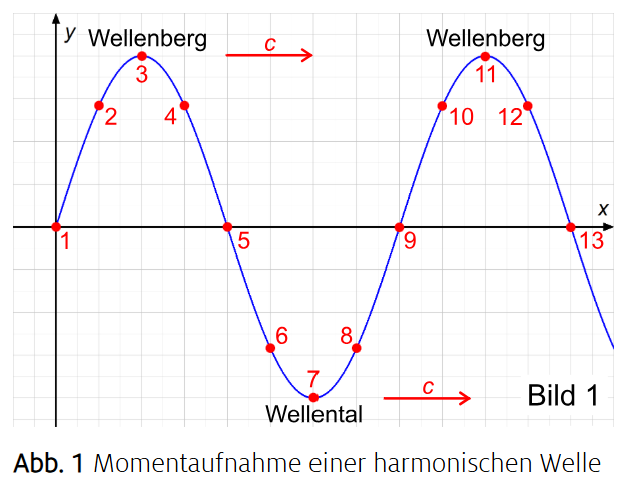

Nachdenkfrage
Weil $y$ von zwei Variablen abhängt (Ort und Zeit). Das wäre eine 3D-Fläche. Zum Zeichnen fixiert man entweder $x$ oder $t$.
Weil $y$ von zwei Variablen abhängt (Ort und Zeit). Das wäre eine 3D-Fläche. Zum Zeichnen fixiert man entweder $x$ oder $t$.
1. Berechne den Zeitpunkt, wann die Welle an dem betrachteten Ort ankommt: $t_0 = \frac{x_0}{c}$, dabei ist $x_0$ der Abstand zur Quelle, $c$ ist die Ausbreitungsgeschwindigkeit der Welle.
2. Zeichne ein Koordinatensystem mit der Zeit $t$ auf der $x$-Achse.
3. Periodendauer $ T= \frac{\lambda}{c}$ und Amplitude $A$ bestimmen.
4. Starte die Sinuskurve mit Amplitude $A$ und Periodendauer $T$, die erst ab dem Zeitpunkt $t_0 = \frac{x_0}{c}$ zu schwingen beginnt (davor y=0) nach rechts.
5. Die Kurve sieht aus, wie die Schwingung der Quelle, nur um $t_0 = \frac{x_0}{c}$ nach rechts verschoben, davor ist sie Null.
1. Berechne den Ort, bis wohin die Welle in der Zeit $t_0$ gekommen ist: $x_0 = c \cdot t_0$.
2. Zeichne ein Koordinatensystem mit dem Ort $x$ auf der $x$-Achse.
3. Periode $ \lambda= c \cdot T$ und Amplitude $A$ bestimmen.
4. Starte die Sinuskurve mit Amplitude $A$ und Periode $\lambda$, von da an rückwärts nach links (ab $x_0$ nach rechts ist $y=0$).
5. Fängt die Quelle an, zuerst nach oben zu schwingen, dann zeichnest du auch erst nach oben.
Die ganze Wellenform verschiebt sich im Raum. Die Form bleibt sinusförmig, aber sie liegt an einer anderen Stelle.

| Begriff | Zuordnung |
|---|---|
| Momentaufnahme | Form der Welle im Raum |
| Zeitlicher Verlauf | Schwingung eines festen Ortes |
| t fest: welches Diagramm? | $x$-$y$ Diagramm |
| x fest: welches Diagramm? | $t$-$y$ Diagramm |
Für y(x₀,t) bleibt der Ort fest: horizontale Achse t, vertikale Achse y, Start der Schwingung bei tₐ = x₀/c, danach dieselbe Sinusform wie an der Quelle. Im Beispiel x₀ = 1,05 m und c = 0,30 m/s ist tₐ = 3,50 s; vorher ruht der Punkt. Für y(x,t₀) bleibt die Zeit fest: horizontale Achse x, Front bei xF = ct₀ und räumliche Periode λ = cT. Im Beispiel t₀ = 1 s liegen die Front bei 0,30 m und λ bei 0,15 m; von der Front nach links beginnt die Kurve mit einem Berg. Rechts der Front ruht das Seil.
Das x-y-Diagramm zeigt viele Seilpunkte gleichzeitig und macht λ ablesbar. Das t-y-Diagramm zeigt einen einzigen Seilpunkt nacheinander und macht T ablesbar. Sinusförmiges Aussehen allein unterscheidet diese Darstellungen nicht; die Einheit der horizontalen Achse entscheidet.
b: Wellen transportieren Energie (und Information).
Bei mechanischen Wellen schwingen die Teilchen um ihre Ruhelage, aber die Störung (Energie/Information) breitet sich aus.
a: Die Auslenkung y hängt vom Ort x und der Zeit t ab.
y(x,t) ordnet jedem Ort x und jedem Zeitpunkt t eine Auslenkung y zu.
a: Man hält die Zeit fest ($t = t_0$) und betrachtet $y$ in Abhängigkeit von $x$.
Momentaufnahme: Zeitpunkt einfrieren $t=t_0$ räumliches Profil $y(x,t_0)$.
a: $x$-Achse: Ort $x$, $y$-Achse: Auslenkung $y$.
Im $x$-$y$ Diagramm wird die Auslenkung über dem Ort dargestellt (Zeit ist fest).
b: Die zeitliche Schwingung eines festen Teilchens.
Bei festem Ort $x_0$ sieht man, wie die Auslenkung $y$ mit der Zeit $t$ schwingt.
a: Die Momentaufnahme $y(x,t_0)$ ist sinusförmig.
b: Der Zeitverlauf $y(x_0,t)$ ist sinusförmig.
c: Beides ist sinusförmig, aber es sind unterschiedliche Diagramme.
Bei harmonischen Wellen sind sowohl räumliches Profil (bei festem t) als auch zeitlicher Verlauf (bei festem x) sinusförmig.
a: Weil die Störung Zeit braucht, um sich auszubreiten.
Teilchen, die weiter entfernt sind, werden später „erreicht“, ihre Sinusschwingung ist zeitlich versetzt (phasenverschoben).
a: $\Delta \varphi = 2\pi$ (gleiche Phase).
b: $\Delta \varphi = \pi$ (gegenphasig).
Nach einer ganzen Wellenlänge wiederholt sich die Phase: $\Delta \varphi = \frac{2\pi}{\lambda}\cdot\Delta x = 2\pi$.
Eine Welle lässt sich durch eine Wellenfunktion beschreiben. Man schreibt sie oft als y(x,t). Dabei ist Ort x die Position entlang des Seils und Zeit t der betrachtete Zeitpunkt. Die Größe Auslenkung y gibt an, wie weit das Teilchen ausgelenkt ist.Hält man die Zeit fest, erhält man eine Momentaufnahme. Im $x$-$y$ Diagramm zeichnet man die Auslenkung gegen den Ort; bei harmonischer Anregung ist das eine Sinuskurve.Hält man dagegen den Ort fest, beobachtet man den Zeitverlauf der Schwingung. Im $t$-$y$ Diagramm zeichnet man die Auslenkung gegen die Zeit; auch das ist eine Sinuskurve.Teilchen an verschiedenen Orten schwingen nicht gleichzeitig, sondern mit einer Phasenverschiebung. Die Phasendifferenz $\Delta \varphi$ hängt vom Abstand $x_0$ ab: $\Delta \varphi = k\cdot\Delta x$. Dabei ist $k$ die Wellenzahl $k$ mit $k = \frac{2\pi}{\lambda}$, wobei $\lambda$ die Wellenlänge $\lambda$ ist.
Eine mögliche Antwort
Die Wellenfunktion y(x,t) ordnet jedem Ort und Zeitpunkt eine Auslenkung zu. Bei festem x zeigt das t-y-Diagramm die Schwingung eines Teilchens mit Periodendauer T. Bei festem t zeigt das x-y-Diagramm die räumliche Wellenform mit Wellenlänge λ. Für eine rechts laufende harmonische Welle gilt y = A sin(ωt − kx), ω = 2π/T und k = 2π/λ. Die Laufzeit x/c verzögert die Schwingung eines entfernten Teilchens; bei einem erst gestarteten Erreger ist y vor Ankunft der Front null. Es gilt c = λ/T = λf. A misst die maximale lokale Auslenkung und c die Ausbreitung der Phase, nicht die Geschwindigkeit eines Seilteilchens.
λ = cT = 0,20 · 0,50 m = 0,10 m = 10 cm. a) Die Front liegt bei xF = 22,5 cm. In 0 ≤ x ≤ 22,5 cm gilt y(x,1,125 s) = 2 cm · cos(2πx/10 cm), danach y = 0. Maxima bei 0; 10; 20 cm, Minima bei 5; 15 cm, Nullen bei 2,5; 7,5; 12,5; 17,5; 22,5 cm. b) B wird nach 25 cm/(20 cm/s) = 1,25 s erreicht. Bis dahin ist yB = 0; danach yB(t) = 2 cm sin[4π(t−1,25 s)/s]. Maxima liegen bei 1,375; 1,875; 2,375 s, Minima bei 1,625; 2,125 s; bei 2,50 s ist y = 0 mit Bewegung nach unten.
λ = cT = 0,20 · 0,50 m = 0,10 m = 10 cm. a) Die Front liegt bei xF = 22,5 cm. In 0 ≤ x ≤ 22,5 cm gilt y(x,1,125 s) = 2 cm · cos(2πx/10 cm), danach y = 0. Maxima bei 0; 10; 20 cm, Minima bei 5; 15 cm, Nullen bei 2,5; 7,5; 12,5; 17,5; 22,5 cm. b) B wird nach 25 cm/(20 cm/s) = 1,25 s erreicht. Bis dahin ist yB = 0; danach yB(t) = 2 cm sin[4π(t−1,25 s)/s]. Maxima liegen bei 1,375; 1,875; 2,375 s, Minima bei 1,625; 2,125 s; bei 2,50 s ist y = 0 mit Bewegung nach unten.
Falsch: Die Ausbreitungsgeschwindigkeit der Welle ändert sich ständig, während die Schnelle der Teilchen konstant ist.
Falsch! Es ist genau umgekehrt: Die Ausbreitungsgeschwindigkeit c (der Störung) bleibt konstant, aber da die Teilchen schwingen, ändert sich ihre Schnelle v (Momentangeschwindigkeit) andauernd.
b: Wenn das Teilchen die Ruhelage (Elongation null) passiert.
Beim Nulldurchgang ist die Bewegungsgeschwindigkeit (Schnelle) am größten. Am Umkehrpunkt (maximaler Auslenkung) steht das Teilchen kurz still (v=0).
a: Maximale Auslenkung der schwingenden Teilchen aus der Ruhelage (Gleichgewichtslage).
Die Amplitude ist die größte Auslenkung eines Teilchens von der Ruhelage.
a: Alle erfassten Teilchen besitzen die gleiche Amplitude wie das erregende Teilchen.
Ungedämpft bedeutet hier: keine Abnahme der Amplitude; alle Teilchen schwingen mit gleicher Amplitude.
a: Zeit für eine volle Schwingung eines Teilchens.
c: Zeit, die die Welle für eine Strecke von einer Wellenlänge braucht.
Die Schwingungsdauer ist die Dauer einer vollständigen Periode.
a: $f = \frac{1}{T}$
b: $T = \frac{1}{f}$
Frequenz und Periodendauer sind Kehrwerte.
a: Anzahl der Schwingungsperioden pro Zeiteinheit eines Teilchens.
Die Frequenz ist die Anzahl vollständiger Schwingungen pro Zeit.
a: Überstrichener Winkel (im Bogenmaß) pro Zeiteinheit.
$\omega$ ist eine Winkelgeschwindigkeit: Phase in Radiant pro Sekunde.
a: $\omega = 2\pi \cdot f$
b: $\omega = \frac{2\pi}{T}$
Da f = 1/T gilt $\omega = 2\pi f = \frac{2\pi}{T}$.
a: Amplitude $A$
b: Schwingungsdauer $T$
d: Erregerfrequenz $f$
e: Kreisfrequenz $\omega$
A, T (bzw. f, $\omega$) werden vom Erreger vorgegeben; $c$ hängt vom Medium ab.
a: Geschwindigkeit, mit der sich die Störung im Wellenträger ausbreitet.
c: Geschwindigkeit eines ausgezeichneten Punktes (z.B. Wellenberg) entlang des Mediums.
v ist die Ausbreitungsgeschwindigkeit der Wellenform (z.B. eines Wellenbergs), nicht die Teilchengeschwindigkeit.
a: Die Phasengeschwindigkeit $c$ ist nicht die gleiche wie die Geschwindigkeit der Teilchen.
Teilchen schwingen um die Ruhelage; die Wellenform wandert.
a: Vom Wellenträger/Medium (z.B. Seilspannung, Dichte).
$c$ ist eine Eigenschaft des Mediums, nicht des Erregers.
a: x-Abstand zum nächsten Teilchen im gleichen Schwingungszustand (gleiche Auslenkung und gleiche Geschwindigkeit).
$\lambda$ ist der räumliche Abstand zweier gleichphasiger Punkte.
a: Sie haben zur gleichen Zeit gleiche Auslenkung und gleiche Geschwindigkeit (gleiche Phase).
Gleiche Phase bedeutet gleicher Schwingungszustand, inklusive Bewegungsrichtung.
a: $c = \lambda \cdot f$
b: $\lambda = \frac{c}{f}$
c: $\lambda = c \cdot T$
Aus $c = \lambda \cdot f$ folgt $\lambda = \frac{c}{f}$ und mit $f = \frac{1}{T}$ auch $\lambda = c\cdot T$.
Eine mögliche Antwort
Ich musste zuerst erkennen, dass die linke Achse den Ort und die rechte die Zeit darstellt. Nur im Ortsbild lese ich λ = 1,5 m ab, nur im Zeitbild T = 1,1 s. Durch die Einheiten konnte ich die Diagramme sicher unterscheiden. Danach folgten f = 0,91 Hz und c = λ/T ≈ 1,36 m/s. Die Querbewegung der Seilteilchen darf ich nicht mit der Ausbreitungsgeschwindigkeit verwechseln.
A: maximale Auslenkung in m; y: momentane gerichtete Auslenkung in m; T: Dauer einer vollständigen Schwingung in s; f = 1/T: Schwingungen pro Sekunde in Hz; ω = 2πf: Kreisfrequenz in s⁻¹; λ: räumliche Periode in m; k = 2π/λ: Wellenzahl in m⁻¹; c = λf: Phasengeschwindigkeit in m/s; v = ∂y/∂t: momentane Teilchengeschwindigkeit in m/s. Im linearen nichtdispersiven Modell gibt die Quelle A und f vor, der Träger bestimmt c.
Ausgangswerte: c = 2,5 m/s, f = 0,40 Hz, λ = 6,25 m. Bei c = 5 m/s und gleichem f wird λ = 12,5 m. Bei f = 0,80 Hz und gleichem c wird λ = 3,125 m. Verdopplung von A ändert λ nicht; sie verdoppelt die maximale Schnelle ωA und vervierfacht im linearen Modell die Energie.
a) Links ist die Momentaufnahme y(x), rechts die zeitliche Schwingung y(t). b) A = 3,0 m, T = 1,1 s, f = 1/T = 0,909 Hz und λ = 1,5 m. c) c = λ/T = 1,364 m/s ≈ 1,4 m/s. d) Das Ortsbild zeigt eine Transversalwelle; Luft überträgt keine elastischen Scherkräfte und gewöhnlicher Schall in Luft ist longitudinal. Außerdem wäre für eine hörbare Luftschallwelle mit c ≈ 343 m/s eine Wellenlänge von 1,5 m mit etwa 229 Hz verbunden, nicht mit den hier gemeinsam dargestellten Werten. Geprüfte Aufgabenquelle.
a: Die Schwingung am Ort $x$ startet um die Laufzeit $\frac{x}{c}$ später.
$x/c$ ist die Verzögerung, bis die Störung den Ort $x$ erreicht.
a: Die Welle muss beim Zeichnen der Momentaufnahme nach links rückwärts aufgebaut werden.
Das Minus steht für eine Verschiebung nach rechts bzw. das rückwärts Zeichnen im Raum.
Dann würde sich das Vorzeichen umdrehen: $y(x,t)=y\cdot \sin\left(2\pi\left( \frac{t}{T} + \frac{x}{\lambda} \right)\right)$. Das Plus bedeutet, dass die Form nach links wandert.
Die Schwingung am Erreger lautet $\bf{\hat{y} \cdot \sin\left(\omega\cdot t\right)}$. Die Laufzeit zur Stelle x ist $\bf{\Delta t = \frac{x}{c}}$, daher ersetzt man t durch $\bf{t - \Delta t}$ und erhält $\bf{\hat{y}\cdot \sin\left(\omega\cdot\left(t - \Delta t\right)\right)}$. Mit $\bf{\omega = \frac{2\pi}{T}}$ sowie $\bf{\lambda = c\cdot T}$ folgt schließlich $\bf{y(x,t)=\hat{y}\cdot \sin\left(2\pi\left( \frac{t}{T} - \frac{x}{\lambda}\right)\right)}$.
Eine mögliche Antwort
Am Erreger lautet die Bewegung y(0,t) = A sin(ωt). Bis zum Ort x braucht die Störung die Laufzeit x/c. Deshalb besitzt das dortige Teilchen zur Zeit t den Zustand, den der Erreger zur früheren Zeit t − x/c hatte. Einsetzen ergibt y(x,t) = A sin[ω(t − x/c)] = A sin[2π(t/T − x/λ)]. Ein weiter entferntes Publikum hört einen Lautsprecherton entsprechend später als ein nahes Publikum. Das Minus vor x beschreibt die Ausbreitung nach rechts; es verändert weder Amplitude noch Frequenz.
y(0,t) = 0,020 m sin(4πt/s). Bei t = 2,4 s ist y = 0,020 sin(9,6π) m = −0,01902 m. Die Teilchengeschwindigkeit ist v = ∂y/∂t = 0,080π cos(4πt/s) m/s, also v(2,4 s) = +0,07766 m/s. Der Seilanfang liegt 1,90 cm unter der Ruhelage und bewegt sich nach oben. Seine x-Koordinate bleibt 0; c = 0,20 m/s ist die Ausbreitungsgeschwindigkeit und nicht seine Schnelle.
y(0,t) = 0,020 m sin(4πt/s). Bei t = 2,4 s ist y = 0,020 sin(9,6π) m = −0,01902 m. Die Teilchengeschwindigkeit ist v = ∂y/∂t = 0,080π cos(4πt/s) m/s, also v(2,4 s) = +0,07766 m/s. Der Seilanfang liegt 1,90 cm unter der Ruhelage und bewegt sich nach oben. Seine x-Koordinate bleibt 0; c = 0,20 m/s ist die Ausbreitungsgeschwindigkeit und nicht seine Schnelle.
| Begriff | Zuordnung |
|---|---|
| Amplitude | Maximale Auslenkung des Körpers A |
| Periode $T$ | Zeit für eine volle Schwingung |
| Frequenz $f$ | Schwingungen pro Sekunde |
| Laufzeit $\Delta t$ | Zeit, bis die Störung den Ort x erreicht |
y(x,t) = A sin[2π(t/T − x/λ)] = A sin[ω(t−x/c)]. A ist die Amplitude, T die zeitliche Periode, λ die räumliche Periode, x der Abstand vom Erreger, t die Zeit und c = λ/T. Für den bei t = 0 gestarteten Erreger gilt die Sinusform erst für t ≥ x/c; vorher y = 0. Das Plus vor x/λ beschreibt dagegen eine nach links laufende Welle.